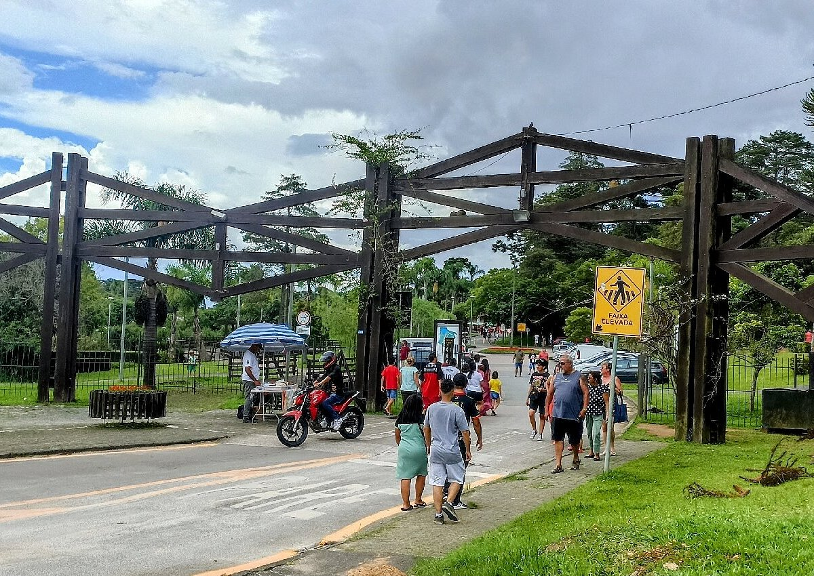
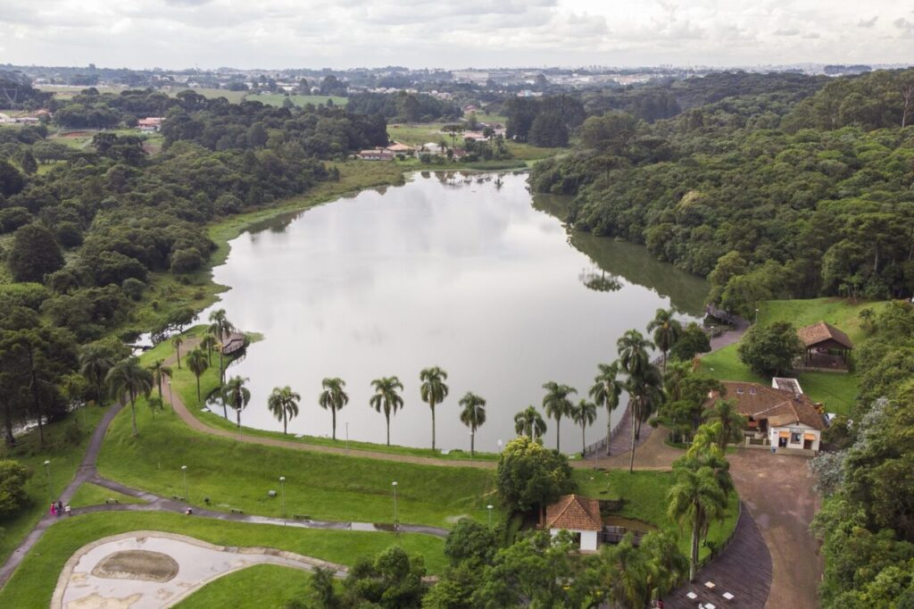

Apresentação
Localizado no bairro Umbará, na região sul de Curitiba, o Parque Municipal Lago Azul é um refúgio gratuito de natureza e lazer. O espaço conta com um grande lago cercado por bosque nativo, mirante, trilhas, ciclovia, quadras esportivas, parquinho infantil e churrasqueiras. É o destino ideal para famílias que buscam caminhar ao ar livre, fazer piqueniques ou almoçar no restaurante rústico à beira da água.

Desenvolvimento no Paraná
Durante boa parte do século 20, quando ainda não havia o hábito comum de viajar ao Litoral nos fins de semana, Curitiba encontrou sua própria maneira de viver dias de sol, água e diversão. No Umbará, o Lago Azul se transformou em um dos espaços mais populares da capital, a ponto de ser chamado pela população de “a praia dos curitibanos”. Hoje, o local é um parque estruturado, revitalizado pela Prefeitura, mas sua história carrega décadas de memória afetiva dos moradores. Apesar de nunca ter tido oficialmente uma praia, com ondas e areia, Curitiba viu no Lago Azul uma alternativa. Entre as décadas de 1960 e 1980, a área de 128,5 mil m² reunia pessoas de todas as classes sociais. Era ali que famílias inteiras passavam finais de semana, faziam piqueniques, pescavam, nadavam e conviviam em meio à água represada e o espaço verde. De acordo com documentos da Prefeitura de Curitiba, o espaço funcionou até o fim dos anos 1980 como uma espécie de clube particular. As atividades eram variadas e a entrada era acessível, o que transformou o Lago Azul em um dos principais pontos de lazer de uma cidade que ainda tinha poucas opções recreativas. Antes da “praia”, um moinho de milho Antes de se tornar destino de lazer, o local pertencia à família de Luiza-Ângelo Segalla. Durante décadas, ali funcionou um moinho de milho, que sustentava a família e atendia moradores da região rural. O lago não é natural: foi construído pelo patriarca, a partir do represamento das águas do Rio Ponta Grossa. Essa característica deu origem ao grande espelho d’água que, anos mais tarde, se tornaria a “praia” improvisada dos curitibanos. A combinação de área verde, mata nativa e lago amplo criava um ambiente convidativo e único na região. A mudança definitiva na história do Lago Azul começou nos anos 2000, quando o município decidiu transformar o espaço em uma área pública de lazer. Em 2008, o Parque Lago Azul foi oficialmente inaugurado pela Prefeitura de Curitiba, após obras de revitalização que preservaram boa parte das estruturas originais. lago azul curitibaParque Lago Azul: do moinho de milho à praia popular e hoje um dos parques mais bonitos da cidade Foto: Luiz Costa/SMCS A antiga casa de madeira, que funcionava como sede da propriedade, foi restaurada e hoje abriga um bistrô. O projeto priorizou a preservação da história e também a integração da paisagem natural com áreas de uso comunitário. O que o visitante encontra hoje na antiga “praia” dos curitibanos O acesso ao mirante do parque é feito por uma trilha aberta em meio à vegetação nativa. O bosque ao redor do lago foi mantido, e caminhos internos foram planejados para valorizar a paisagem e oferecer diferentes perspectivas do local. A sensação é de entrar em um fragmento de mata preservada, com recantos tranquilos, áreas de contemplação e pontos estratégicos que revelam a extensão do lago, o mesmo que há mais de meio século era cenário de verões improvisados pelos curitibanos. lago azul – prefeituraNa imagem, Parque Lago Azul. Foto: Luiz Costa/SMCS O Parque Lago Azul recebeu uma extensa estrutura de lazer que ampliou seu uso e o aproximou da comunidade do Umbará e de bairros vizinhos. Entre as melhorias realizadas estão a praça d’água, o parquinho infantil, uma pista de caminhada, canchas esportivas, academia ao ar livre, churrasqueiras, sanitários, bicicletário e amplos estacionamentos. Concursos no Paraná abrem vagas com salários de até R$ 34 mil no fim de 2025 Do lado externo do bistrô foi construído um caramanchão que hoje serve de espaço para reuniões comunitárias, pequenos eventos e encontros informais.
